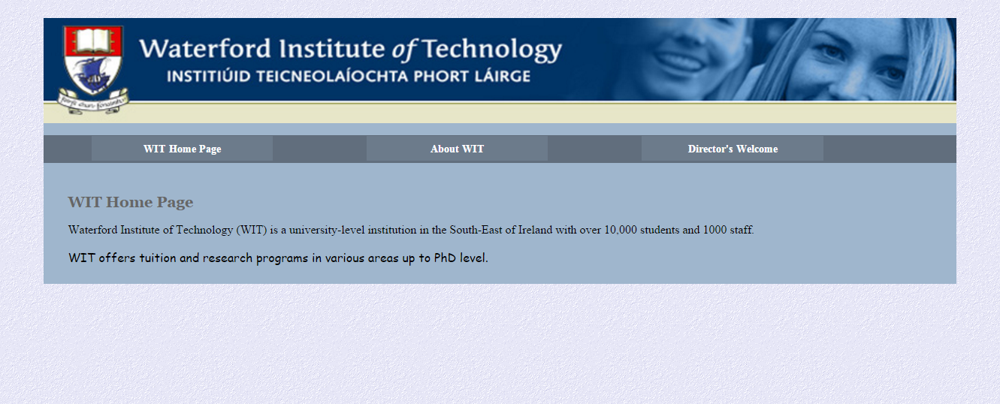

In this lab, you will learn how to add background images to your webpages and control their appearance. You will also apply a gradient background to a webpage.
Images can be used as decorative backgrounds for your webpages. When you add a background image, you should also add a background colour also that complements the image colour (and be used if the image doesn't appear, for some reason).
To add a background image you need to specify the file name, and its relative location.
Note the ../ in the image path below, before images/clouds.jpg; this is very important to include. It tells the browser how to get from your css folder, where this CSS code is, to the images folder where the background image is stored. Using "../" tells the browser to go up a folder to the main website folder; "images/" tells it to go into the images folder; and, lastly, "clouds.jpg" tells it to look for that image file.
body {
background-image: url(../images/clouds.jpg);
background-color: lightblue;
}There are several other properties that you can set for background images, including:
We will now discuss each of these properties.
An image pattern can keep repeating, repeat horizontally, and repeat vertically. The default is that an image will repeat to fill the background unless styled otherwise.
For example, this page shows the image clouds.jpg repeating on the web page.
#repeatedclouds {
border:1px solid black;
background-color: #aebbdb;
background-image: url(../images/clouds.jpg);
padding:.5em;
}This example shows what happens if an image is not available.
You can set a background to repeat from left-to-right (horizontally).
For Example:
#verticalfade {
border:1px solid black;
background-color: #e3e3e3;
background-image: url(../images/vert-fade.gif);
background-repeat: repeat-x;
padding:1em;
padding-top:2em;
}This example shows the image vert-fade.gif repeating from left-to-right on the web page.
You can also set a background to repeat from top-to-bottom (vertically).
For Example:
#horizontalfade {
border:1px solid black;
background-color: white;
background-image: url(../images/hori-fade.gif);
background-repeat: repeat-y;
padding-left:12em;
}This example shows the image hori-fade.gif repeating from top-to-bottom on the web page.
You may simply want to display a background images once, and only once.
For Example:
#palmtree {
border:1px solid black;
background-color: white;
background-image: url(../images/palm-trees.jpg);
background-repeat: no-repeat;
background-position:top right;
padding:.3em 13em .3em 1em;
}This example shows the one image palm-trees.jpg that is not repeated on the web page.
The background-size property specifies the size of the background image.
background-size: length|percentage|cover|contain;
Note: Where one value is a defined length or percentage and the other value is auto (or blank), the background image will be scaled according to the specified length or percentage in such a manner that its intrisic proportions (ratio) are maintained.
View the following examples of the background-size property set to different values. You can right-click to 'View page source' and select the CSS file to see the code for each example.
Example One shows an image with the background size set to 100px width and height.
Example Two shows three images with the background size set to 100% width and height, but with different sizes for the parent container.
Example Three shows an image with the background size set to 25% width and height set to auto.
Example Four shows an image with the background size set to 120px width and height set to auto.
Example Five shows three images with the background size set to cover. The image is scaled to fit the entire container but, if that has a different aspect ratio, the image will be cropped.
Example Six shows three images with the background size set to contain. The image will grow or shrink proportionally but the width and height will not exceed the container’s dimensions.
Example Seven shows a small parent container that contains a background image with no background size applied.
Example Eight shows a small parent container that contains a background image with a background size applied (100% 100%). There is no padding applied for the text.
Example Nine shows a small parent container that contains a background image with a background size applied. There is padding applied for the text.
The background-position property sets the starting position of a background image. The background-position property requires two values: the vertical position (top, center, or bottom) and the horizontal position (left, center, or right).
Remember the following example?
#palmtree {
border:1px solid black;
background-color: white;
background-image: url(../images/palm-trees.jpg);
background-repeat: no-repeat;
background-position:top right;
padding:.3em 13em .3em 1em;
}This example showed a palm tree image which was fixed at the top right of the page.
The background-attachment property sets whether a background image is fixed or scrolls with the rest of the page. The values are scroll or fixed.
This example shows the image chrome.gif fixed on the page even if the user needs to scroll.
body
{
background-image:url('../images/chrome.gif');
background-repeat:no-repeat;
background-attachment:fixed;
}We can also set the color, image, etc. using the background shorthand property.
For example, here you can see the background colour is set to white, a background image is added, no-repeat is specified, and a position is given: all in one go. Values should be separated by spaces.
#palmtree {
border:1px solid black;
background: white url(../images/palm-trees.jpg)
no-repeat top right;
padding:.3em 13em .3em 1em;
}CSS3 gradients let you display smooth transitions between two or more specified colors.
Earlier, you had to use images for these effects. However, by using CSS3 gradients you can reduce download time and bandwidth usage. In addition, elements with gradients look better when zoomed, because the gradient is generated by the browser.
CSS3 defines two types of gradients:
Syntax: background: linear-gradient(direction, color-stop1, color-stop2, ...);
Linear gradients create a smooth blend of colour in a linear direction. We can specify the direction of the gradient and the colours that are part of the blend. We need to specify at least two colours, and can use more than two if we wish. Colours can be specified using the colour name or the hexadecimal colour code. Note: We should also provide a background-color as some older browsers may not support the linear-gradient property.
Here are some examples of linear gradients.
This gradient is red to yellow. Note that when we don't specify a direction, it uses the default: top to bottom.
#grad1 {
height: 200px;
background-color: red; /* For browsers that do not support gradients */
background: linear-gradient(red, yellow);
}<h3>Linear Gradient - Top to Bottom</h3>
<p>This linear gradient starts at the top. It starts red, transitioning to yellow.</p>
<div id="grad1"></div>This gradient is blue to green. We have also specified "to right", which means the gradient will go from left to right.
#grad2 {
height: 200px;
background-color: blue; /* For browsers that do not support gradients */
background: linear-gradient(to right, blue, green);
}<h3>Linear Gradient - Left to Right</h3>
<p>This linear gradient starts at the left and goes to the right. It starts blue, transitioning to green.</p>
<div id="grad2"></div>This gradient is rainbow-coloured. We can specify as many colours as we want in a gradient; just separate them with commas. We have also specified "to bottom right", which means the gradient will go from the top-left to the bottom-right.
#grad3 {
height: 200px;
background-color: green; /* For browsers that do not support gradients */
background: linear-gradient(to bottom right, red, orange, yellow, green, blue, indigo, violet);
}<h3>Linear Gradient - Top left to Bottom right</h3>
<p>This linear gradient starts at the top left and goes towards the bottom right. It has multiple colour stops: red, orange, yellow, green, blue, indigo, and violet - all the colours of the rainbow!</p>
<div id="grad3"></div>Syntax: background: radial-gradient(shape, color-stop1, color-stop2, ...);
Radial gradients create a smooth blend of colour in a elliptical or circular shape, from the centre outwards. We can specify the shape that should be used: ellipse (which is the default) and circle. We need to specify at least two colours and, as with linear gradients, we can use more than two if we wish. Note: Don't forget to include a background-color for older browsers that don't support the gradient property.
Here are some examples of radial gradients.
This gradient is red to yellow. It uses the default shape of an ellipse.
#grad1 {
height: 200px;
background-color: red; /* For browsers that do not support gradients */
background: radial-gradient(red, yellow);
}<h3>Radial Gradient - Ellipse</h3>
<p>This radial gradient uses the default shape: an ellipse. It starts red in the centre, transitioning outwards to yellow.</p>
<div id="grad1"></div>This gradient is blue to green. We have also specified circle as the shape for the gradient.
#grad2 {
height: 200px;
background-color: blue; /* For browsers that do not support gradients */
background: radial-gradient(circle, blue, green);
}<h3>Radial Gradient - Circle</h3>
<p>This radial gradient uses the circle shape. It starts blue, transitioning outwards to green.</p>
<div id="grad2"></div>This gradient is rainbow-coloured and uses the circle shape. As we saw with the linear gradient, we can use multiple colours by separating them with commas.
#grad3 {
height: 200px;
background-color: green; /* For browsers that do not support gradients */
background: radial-gradient(circle, red, orange, yellow, green, blue, indigo, violet);
}<h3>Radial Gradient - Circle, multiple colours</h3>
<p>This radial gradient also uses the circle shape. It has multiple colour stops: red, orange, yellow, green, blue, indigo, and violet - all the colours of the rainbow!</p>
<div id="grad3"></div> header {
height:140px;
}